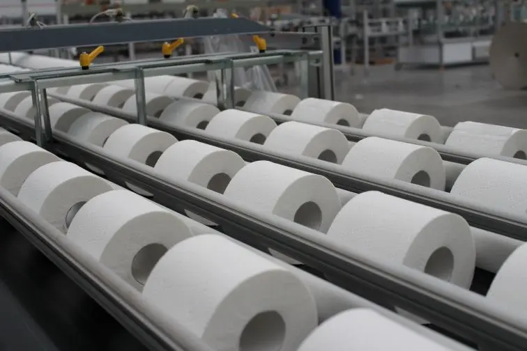

Aerocoll T 2160
Клей для санитарно-гигиенических изделий
Применение
Клей для ламинирования бумажных слоев при создании многослойной туалетной бумаги и полотенец.
Техническая информация
- pH
- 5-7
- Вязкость
- 20000- 30000 мПас (Брукфильд RVT, 3/20, 23°C)
- Размеры упаковок
- 30кг/1000кг
- Температура применения
- +15...+23 °С
- Тип/связующее вещество
- Клей на основе синтетических полимеров в водном растворе
- Хранение
- Не менее 6 месяцев в оригинальной упаковке. После длительного хранения клей необходимо перемешать перед использованием. Не допускать замерзания.